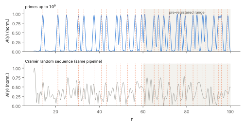
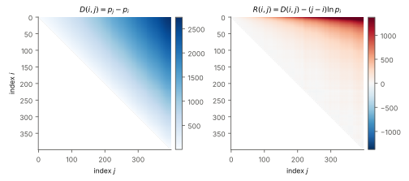
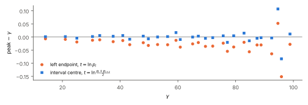
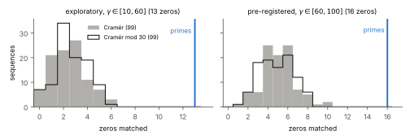

Figures
The central result first, then the object it comes from, the bias that was found and corrected, and the comparison with random sequences. Select any figure to enlarge it.








Scope
What the experiment supports, and where it stops.
What it shows
- Once the smooth cone is removed, the residual is not featureless: read in ln p, it peaks at the zeros of ζ(s).
- The only input is the sequence of primes: no prime powers, no von Mangoldt function.
- Three practical lessons: use the logarithmic variable, avoid spans long relative to p, label each span by its centre.
Limitations
- Nothing new about the zeros; precision (≈ 10−2) is modest next to established methods.
- The pre-registered confirmation did not pass: robustness on half-windows failed.
- A single scale (X = 109), simple random models, conventional thresholds.
Reproduce
The notebooks are deterministic with fixed seeds. A full run takes about 18 minutes on two virtual CPUs and peaks at about 1.3 GB of memory.
pip install numpy matplotlib mpmath
jupyter notebook notebooks/Cite
The repository is archived on Zenodo with each release; the DOI will be added here.
@misc{pinoosorio2026cone,
author = {Pino Osorio, Rodrigo},
title = {A Logarithmic Cone of Prime Differences: An Expository
Experiment on the Zeros of the Riemann Zeta Function},
year = {2026},
note = {Version 1.1},
url = {https://github.com/rodpino71-expert/logarithmic-cone-zeta}
}